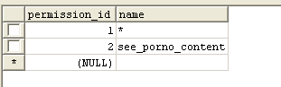

Rapyd Auth Class
Important: It require
some tables (see "index" page of samples), and is optional.
Rapyd Auth class (and his helper) give you a simple way to manage
user authentication.
Reference
$this->rapyd->auth (by default is instanced with rapyd, on library load).Methods
$this->rapyd->auth->trylogin($username, $password, $cookie = true, $max_role=1);
Try to authenticate the user, with $username and $password. the
password will be cheked by the trylogin() "encoded":
Using f.e. CI encryption, $this->encrypt->hash($password, 'md5').
The function return a boolean, and store user data (encrypted) with
rapyd_session class:
"user_name" , "email", "name", "role_id", "user_id", "ip_address"
If $cookie = true, username and password will be stored also in a
cookie, so next browser session it's possible to do auto-login.
$this->rapyd->auth->trylogin_bycookie()
if the trylogin() was executed before and with param $cookie =
true, trylogin_bycookie() simply do:
$this->rapyd->auth->trylogin($username, $password) using cookie values.
$this->rapyd->auth->is_logged()
Return a boolean, prevent hacking attemps checking ip address.
$this->rapyd->auth->logout()
remove all user info, user session vars and cookie.
$this->rapyd->auth->get_role()
get role_id from user session
$this->rapyd->auth->user_exists($username)
boolean username exist?
$this->rapyd->auth->is_active($username)
boolean user is active? (enum field y/n)
$this->rapyd->auth->get_user_id()
get user_id from user session
$this->rapyd->auth->get_user_data($key=null)
get all user session vars or (if you pass $key) only one.
$this->rapyd->auth->check_role($role_id, $strict=false)
check if user has $role_id (or, if strict==false) or his role is more important (lower number)
$this->rapyd->auth->has_permission($permission_id)
really minimum acl (using roles, not groups):
- users
- security_role
 predefined rules.. but you
can manually add/remove roles.
predefined rules.. but you
can manually add/remove roles.
Important: they are hierarchical, so role_id=1 is "God". - security_permission
 permissions, the first permission (*) is special, means "all permissions" they are not hierarchical, you can manually add your custom permissions, the "name" is not used at this moment.
- security_role_permission
 ok a little bit of acl, for
each role it's possible to relate permissions, and to set if it is
allowed or denied.
ok a little bit of acl, for
each role it's possible to relate permissions, and to set if it is
allowed or denied.
In this image, "root" user/s, is allowed to "all permissions" - security_user_permission
 for each user it's possible
to relate permissions, and to set if he is allowed or not.
for each user it's possible
to relate permissions, and to set if he is allowed or not.
In this image, user 44, is not allowed to "see porno content"
Helpers
is_logged();
check_role($role_id, $strict=false);
get_role();
get_user_id();
get_user_data($key=null);
has_permission($permission_id);